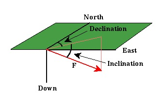

Magnetic Field Nomenclature
As you can see, although we started by comparing the magnetic field to the gravitational field, the specifics of magnetism are far more complex than gravitation. Despite this, it is still useful to start from the intuition you have gained through your study of gravitation when trying to understand magnetism. Before continuing, however, we need to define some of the relevant terms we will use to describe the Earth's magnetic field.
When discussing gravity, we really didn't talk much about how we describe gravitational acceleration. To some extent, this is because such a description is almost obvious; gravitational acceleration has some size (measured in geophysics with a gravimeter in mgals), and it is always acting downward (in fact, it is how we define down). Because the magnetic field does not act along any such easily definable direction, earth scientists have developed a nomenclature to describe the magnetic field at any point on the Earth's surface.
 At any point on the Earth's surface, the magnetic field, F*, has some strength and points in some direction. The following terms are used to describe the direction of the magnetic field.
- Declination - The angle between north and the horizontal projection of F. This value is measured positive through east and varies from 0 to 360 degrees.
- Inclination - The angle between the surface of the earth and F. Positive inclinations indicate F is pointed downward, negative inclinations indicate F is pointed upward. Inclination varies from -90 to 90 degrees.
- Magnetic Equator - The location around the surface of the Earth where the Earth's magnetic field has an inclination of zero (the magnetic field vector F is horizontal). This location does not correspond to the Earth's rotational equator.
- Magnetic Poles - The locations on the surface of the Earth where the Earth's magnetic field has an inclination of either plus or minus 90 degrees (the magnetic field vector F is vertical). These locations do not correspond to the Earth's north and south poles.
*In this context, and throughout the remainder of these notes, F includes contributions from the Earth's main** magnetic field (the inducing field), induced magnetization from crustal sources, and any contributions from sources external to the Earth.
**The main magnetic field refers to that portion of the Earth's magnetic field that is believed to be generated within the Earth's core. It constitutes the largest portion of the magnetic field and is the field that acts to induce magnetization in crustal rocks that we are interested in for exploration applications.